Кхмерский пхкак
weapon:eur_east_angkor_phkak 32 × 32
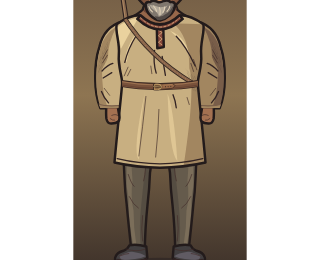
Рельеф XII века показывает пхкак, но старше периода 1200–1250.
Копьё из Ангкор-Вата
weapon:eur_east_angkor_spear 32 × 32
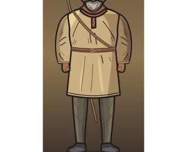
Рельеф XII века старше целевого периода 1200–1250 и показывает оружие в сцене, а не отдельный предмет.
Бенгальский анкуш
weapon:eur_east_bengal_ankusha 32 × 32
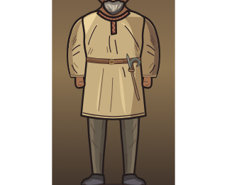
Скульптура XII века старше периода 1200–1250; анкуш показан как атрибут богини, а не отдельная находка.
Китайский меч с кольцом из драконов
weapon:eur_east_china_dragon_ring 32 × 32
32 × 32
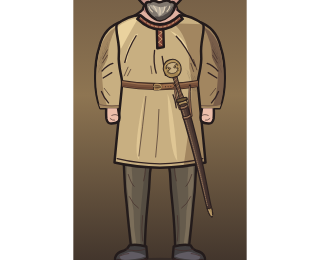
Карточка датирует ранний образец примерно 600 годом, около шести веков до 1200–1250; это не сунский предмет.
Чакра Вишну
weapon:eur_east_chola_chakra 32 × 32
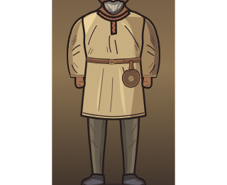
The Met датирует статую примерно третьей четвертью X века, более чем за два столетия до целевого периода; это иконографическое изображение, не отдельный боевой диск.
Трезубец Чола
weapon:eur_east_chola_trishula 32 × 32
На фото не рельеф Дурги из храма Налтунай-Ишварам, а бронзовая Кали из Ченнаи; образ относится к Чола и датирован X веком, задолго до 1200–1250.
Японский тати
weapon:eur_east_japan_tachi 32 × 32
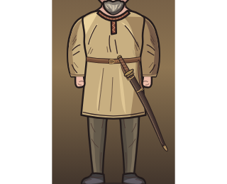
Токийский национальный музей датирует клинок XI веком, до 1200–1250; кадр показывает клинок, но не полный эфес, ножны или комплект ношения.
Панджабская гада
weapon:eur_east_punjab_gada 32 × 32
Образ датирован X–XI веками и старше целевого периода; гада видна как атрибут статуи, не как отдельная находка.
Сунский меч с гардой-полумесяцем
weapon:eur_east_song_crescent_sword 32 × 32
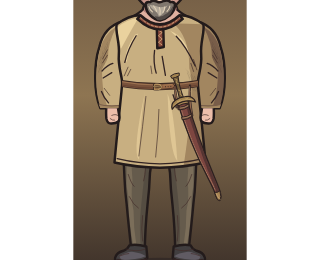
Надпись датирует предмет 1125 годом, на 75 лет раньше начала периода 1200–1250; показан эфес/гарда из частной коллекции, а не доказанная находка XIII века.
Двулезвийный топор из Даргавса
weapon:eur_steppe_dargavs_double_axe 32 × 32
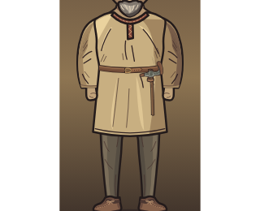
В публикации вещь из вотивного контекста предварительно датирована X — первой половиной XI века; такая датировка не подтверждает тип в 1200–1250.
Газневидская булава со звериной головой
weapon:eur_steppe_ghaznavid_feline_mace 32 × 32
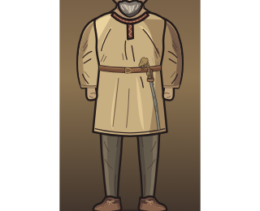
Карточка датирует головку XI–XII веками и указывает лишь вероятный Афганистан; она не подтверждает газневидскую атрибуцию и относится к периоду до 1200–1250.
Саманидский ханджар
weapon:eur_steppe_samanid_khanjar 32 × 32
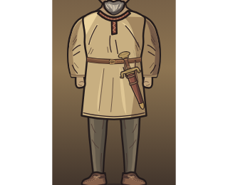
Предмет датирован 860–861 годами, примерно на три века раньше 1200–1250 годов; эта форма не подтверждает вид ханджара в XIII веке.
Праща из Тауля
weapon:eur_west_taull_sling 32 × 32
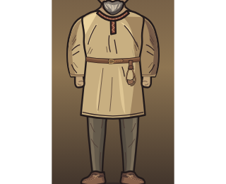
Парижская миниатюра третьей четверти XIII века вместо Каталонии начала XII века; это другой средневековый образец пращи.